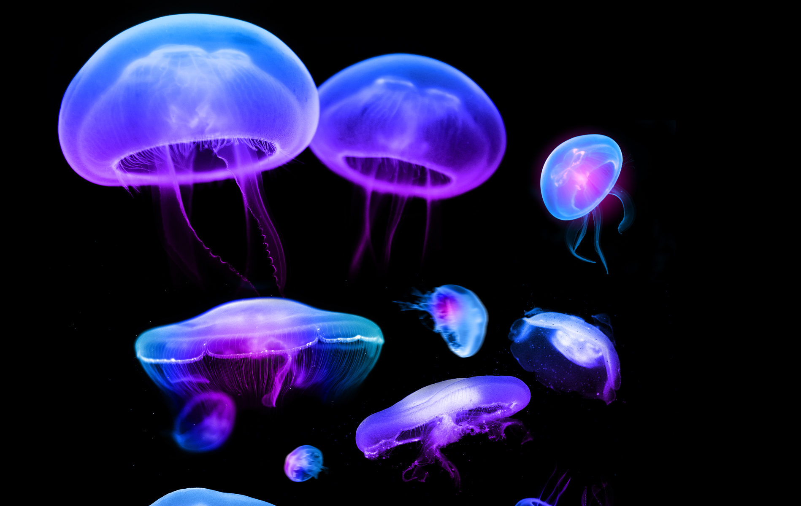

Jellyfish
a few facts about jellyfish.

Jellyfish or jellies are softbodied, free-swimming aquatic animals with a gelatinous umbrella-shaped bell and trailing tentacles.
about jellyfishes
- The bell can pulsate to acquire propulsion and locomotion.
- The tentacles may be utilized to capture prey or defend against predators by emitting toxins in a painful sting.
- Jellyfish have roamed the seas for at least 500 million years, and possibly 700 million years or more, making them the oldest multi-organ animal.